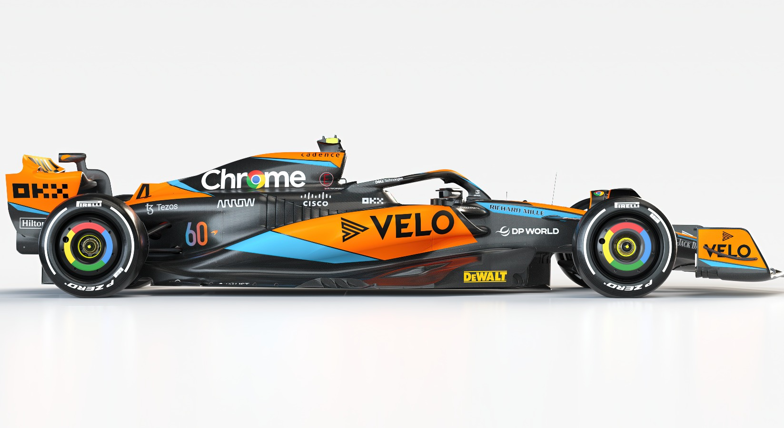

The MCL60: Celebrating 60 years in Formula 1
McLaren have revealed their new F1 challenger, the MCL60, during a launch presentation at their Technology Centre HQ, with the new livery featuring even more papaya orange at the start of a special anniversary year for the team.
In 2023, McLaren will mark 60 years since legendary New Zealand racer Bruce McLaren founded the team and, as an initial tribute, opted to jump straight from last season's 'MCL36' to 'MCL60' with the naming of their latest car.
Gallery More infoThe 2023 Driver Line-up

4 | Lando Norris
Country
Podiums
Points
Grand Prix entered
World Championships
Highest Race Finish
Highest grid position
Date of birth
Place of birth
United Kingdom
12
604
102
N/A
2 (x6)
1
13/11/1999
Bristol, England

81 | Oscar Piastri
Country
Podiums
Points
Grand Prix entered
World Championships
Highest Race Finish
Highest grid position
Date of birth
Place of birth
Australia
2
87
20
N/A
2 (x1)
2
06/04/2001
Melbourne, Victoria
After losing out on fourth to Alpine in the 2022 Constructors' Championship, McLaren will be hoping to regain momentum in 2023, with the incumbent Lando Norris being joined by rookie Oscar Piastri.
Leadership Management